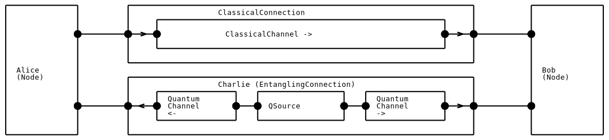

Nodes and Connections
The previous tutorial introduced various component base classes to improve the modelling of a quantum network. In this tutorial we will organise things further by composing these components together into nodes and connections, two examples of composite components. At the end of this section we will have a function to create the network automatically, which we will use in the next section to complete the teleportation scheme using protocols.
Learning goals
Creating a network using nodes and connections (essential).
Adding subcomponents to composite components (advanced).
Forwarding ports (advanced).
Advanced sections are denoted by an asterix (*).
Nodes
Nodes (Node) represent the location entities of a quantum network,
where all operations are local.
The Node (a subclass of Component) is an example of a composite component
that holds and manages sub-components via its subcomponents attribute.
Up to this point in the tutorial Alice and Bob have been generic simulation entities (Entity).
In this section of the tutorial we will turn them into Node components and thereby describe them purely in terms of
their network hardware.
In a later section we will demonstrate how to describe the remaining logical behaviour using virtual protocol entities.
>>> from netsquid.nodes import Node
>>> alice = Node("Alice")
A node can be thought of as a location for any local components.
For example, if we want Alice to have a
quantum memory (QuantumMemory) we can add it to her node as follows:
>>> from netsquid.components import QuantumMemory
>>> qmemory = QuantumMemory("AliceMemory", num_positions=2)
>>> alice.add_subcomponent(qmemory, name="memory1")
>>> alice.subcomponents["memory1"]
QuantumMemory(name='AliceMemory')
In general any component can be added as a sub-component of another component in this way, provided a consistent hierarchy is maintained i.e. no circular parent-child relationships are made. The sub-components and super-component of a component can be queried as follows:
>>> alice.subcomponents
ConstrainedMap({'memory1': QuantumMemory(name='AliceMemory')})
>>> qmemory.supercomponent
Node(name='Alice')
>>> alice.supercomponent is None
True
For nodes there is a special treatment for the primary quantum memory (or quantum processor): it can be specified on initialization, and it can be accessed using the qmemory attribute. For instance:
>>> qmemory = QuantumMemory("BobMemory", num_positions=2)
>>> bob = Node("Bob", qmemory=qmemory)
>>> bob.qmemory
QuantumMemory(name='BobMemory')
>>> bob.subcomponents
ConstrainedMap({'BobMemory': QuantumMemory(name='BobMemory')})
Nodes, like any component, can have ports (Port).
Because it is not possible to connect ports between components with different supercomponents (parents),
a node’s ports serve as the external interface for all their sub-components.
This helps to enforce locality, which we will see again when we discuss protocols.
A node’s sub-component can communicate via a node’s ports via forwarding i.e. it can forward it’s output or receive forwarded input.
{kind=link}
>>> alice.add_ports(['qin_charlie'])
>>> alice.ports['qin_charlie'].forward_input(alice.qmemory.ports['qin'])
Any messages that are transmitted as input to Alice’s qin_charlie port will be directly forwarded as input to her memory’s qin port. Note that unlike port connections, port forwarding is only setup in the specified direction.
Connections
By using port forwarding the node becomes the only exposed interface.
The recommended practice is to connect remote nodes using connection components (Connection).
The Connection base class represents its remote end-points by two ports named A and B,
which by default are not yet bound or forwarded.
The first connection we will construct makes use of a one-way classical communication channel (ClassicalChannel) between Alice and Bob in the teleportation example.
{kind=link}
We define our connection by subclassing from the Connection base class and implementing message behaviour for the A and B ports. A Channel has the default ports send and recv. When a message is put on the input of the connection (at port A) it is forwarded to the send port of the Channel. Similarly the output of the recv port is forwarded to port B.
>>> from netsquid.nodes.connections import Connection
>>> from netsquid.components import ClassicalChannel
>>> from netsquid.components.models import FibreDelayModel
...
>>> class ClassicalConnection(Connection):
... def __init__(self, length):
... super().__init__(name="ClassicalConnection")
... self.add_subcomponent(ClassicalChannel("Channel_A2B", length=length,
... models={"delay_model": FibreDelayModel()}))
... self.ports['A'].forward_input(
... self.subcomponents["Channel_A2B"].ports['send'])
... self.subcomponents["Channel_A2B"].ports['recv'].forward_output(
... self.ports['B'])
The alternative to subclassing in this case is to first instantiate the Connection class and then add and link the channel sub-component, similarly to how we created the nodes above.
>>> cconnection = Connection("ClassicalConnection")
>>> cchannel = ClassicalChannel("Channel_A2B")
>>> cconnection.add_subcomponent(cchannel,
... forward_input=[("A", "send")],
... forward_output=[("B", "recv")])
The connection we’ve constructed is functionally equivalent to the channel,
but hopefully it’s easy to see how it can be extended.
For instance, we could add another one way channel in the opposite direction to make the connection bi-directional (see for example DirectConnection).
Furthermore, because the nodes are only aware of their own ports, a connection can easily be swapped without modifying the node’s implementation.
An entangling connection for teleportation *
A more interesting connection can be constructed to encompass the whole entanglement generation machinery of Charlie from the teleportation example in the previous section. In particular, this connection, which we will call EntanglingConnection, can contain the quantum source and the quantum channels leading to Alice and Bob:
{kind=link}
>>> from netsquid.components.qchannel import QuantumChannel
>>> from netsquid.qubits import StateSampler
>>> from netsquid.components.qsource import QSource, SourceStatus
>>> from netsquid.components.models import FixedDelayModel, DepolarNoiseModel
>>> import netsquid.qubits.ketstates as ks
...
...
>>> class EntanglingConnection(Connection):
... def __init__(self, length, source_frequency):
... super().__init__(name="EntanglingConnection")
... timing_model = FixedDelayModel(delay=(1e9 / source_frequency))
... qsource = QSource("qsource", StateSampler([ks.b00], [1.0]), num_ports=2,
... timing_model=timing_model,
... status=SourceStatus.INTERNAL)
... self.add_subcomponent(qsource)
... qchannel_c2a = QuantumChannel("qchannel_C2A", length=length / 2,
... models={"delay_model": FibreDelayModel()})
... qchannel_c2b = QuantumChannel("qchannel_C2B", length=length / 2,
... models={"delay_model": FibreDelayModel()})
... # Add channels and forward quantum channel output to external port output:
... self.add_subcomponent(qchannel_c2a, forward_output=[("A", "recv")])
... self.add_subcomponent(qchannel_c2b, forward_output=[("B", "recv")])
... # Connect qsource output to quantum channel input:
... qsource.ports["qout0"].connect(qchannel_c2a.ports["send"])
... qsource.ports["qout1"].connect(qchannel_c2b.ports["send"])
The internal clock in the quantum source will automatically trigger this connection to generate entangled qubits and send them as output to its remote ports A and B via quantum channels.
In the next tutorial we will add virtual entities called protocols to our nodes that will describe their behaviour.
Protocols will be very useful for complicated control-flows, and are easier to read and write than what we have shown so far.
The following method demonstrates how to setup a network for teleportation which we can use when setting up Protocols.
In the final simulation we will adjust this method to create and return a Network instead of its individual components.
The network class is a composite component that helps to create networks and manage nodes and connections.
>>> def example_network_setup(node_distance=4e-3, depolar_rate=1e7):
... # Setup nodes Alice and Bob with quantum memories:
... noise_model = DepolarNoiseModel(depolar_rate=depolar_rate)
... alice = Node(
... "Alice", port_names=['qin_charlie', 'cout_bob'],
... qmemory=QuantumMemory("AliceMemory", num_positions=2,
... memory_noise_models=[noise_model] * 2))
... alice.ports['qin_charlie'].forward_input(alice.qmemory.ports['qin1'])
... bob = Node(
... "Bob", port_names=['qin_charlie', 'cin_alice'],
... qmemory=QuantumMemory("BobMemory", num_positions=1,
... memory_noise_models=[noise_model]))
... bob.ports['qin_charlie'].forward_input(bob.qmemory.ports['qin0'])
... # Setup classical connection between nodes:
... c_conn = ClassicalConnection(length=node_distance)
... alice.ports['cout_bob'].connect(c_conn.ports['A'])
... bob.ports['cin_alice'].connect(c_conn.ports['B'])
... # Setup entangling connection between nodes:
... q_conn = EntanglingConnection(length=node_distance, source_frequency=2e7)
... alice.ports['qin_charlie'].connect(q_conn.ports['A'])
... bob.ports['qin_charlie'].connect(q_conn.ports['B'])
... return alice, bob, q_conn, c_conn
We can test part of our network by checking that after one cycle the entangled qubits have arrived on both quantum memories:
>>> ns.set_qstate_formalism(ns.QFormalism.DM)
>>> alice, bob, *_ = example_network_setup()
>>> stats = ns.sim_run(15)
>>> qA, = alice.qmemory.peek(positions=[1])
>>> qB, = bob.qmemory.peek(positions=[0])
>>> qA, qB
(Qubit('qsource-#1-0'), Qubit('qsource-#1-1'))
>>> fidelity = ns.qubits.fidelity([qA, qB], ns.b00)
>>> print(f"Entangled fidelity (after 5 ns wait) = {fidelity:.3f}")
Entangled fidelity (after 5 ns wait) = 0.964
What is next?
In the next section we will use the nodes and connections shown in this tutorial and add protocols to them. A protocol will be able to react to events and interact with the sub-components of the node it is running at.